Quantum Chemistry tutorial
Finding the conical intersection between the excited and ground state in a protonated schiff base with Gaussian09.
Introduction
In one of the previous lecture we've learned about the conical intersections. At such intersections, the adiabatic surfaces touch. We have seen that the degeneracy between the electronic states is lifted (to first order) by displacements in so-called branching space. In the remaining (3N-8) internal degrees of freedom, the degeneracy can be maintained, forming a 3N-8 dimensional seam. In this tutorial we will locate the minimum energy point on this seam, the so called minimum energy conical intersection (MECI).
The package we are going to use is
called Gaussian. It is among the
modern electronic structure codes available and provides an
easy-to-use interface called Gaussview that allows for a
user-friendly access to quantum chemistry.
To learn how to use the program by yourself or maybe extend
your knowledge beyond the scope of this tutorial one can check out the
links on
the following
site.
To start a calculation we basically need four things:
- the structure of the molecule of interest in (cartesian) coordinates
- the overall charge of our system
- the method that will be used (Hartree-Fock (HF),
Density Functional Theory (DFT), Moeller-Plesset perturbation theory (MPx) etc.)
- a basis set.
With these options determined, Gaussian can compute the electronic
wave function. With the wave function at hand, we have access also to
the energy and energy gradients with respect to nuclear
displacement. With the latter we can search for stationary points, at
which these gradients are zero.
In this practical we will locate the minimum energy conical
intersection. At this point, the energy gap in the branching space
space is zero, while the gradients in the 3N-8 dimensional seam space
are zero as well. We will not go into details about the optimization
algorithm that we will use to optimize the MECI, but details can be
found in Bearpark et al. Chem. Phys. Lett. 223 (1994) 269.
The files needed for this practical can be downloaded as an
archive here and unpacked by typing
However, we will try to do everything by ourselves, starting by
creating the formaldimine molecule in Gaussview.
Building the molecule
Open gaussview by typing
This will open a user interface.
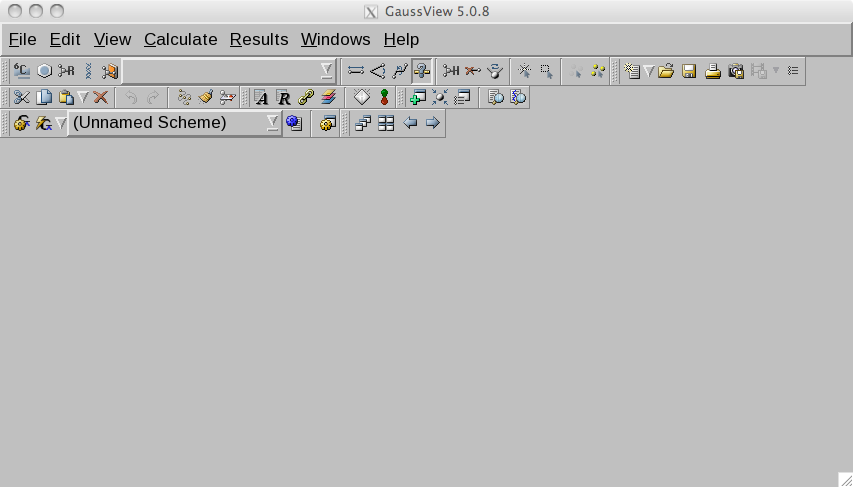
Click on the R (fragment) symbol
button and select an ethene unit (6th element in top row).
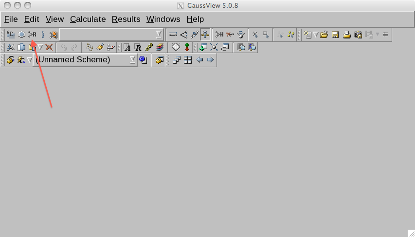
Select the window with the blue background and click in it.
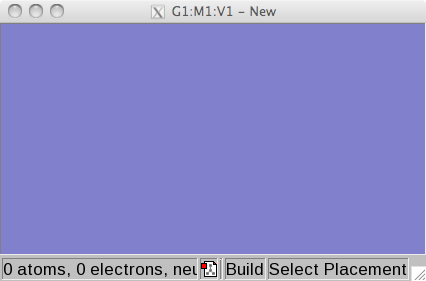
You will see a ethene molecule there now.
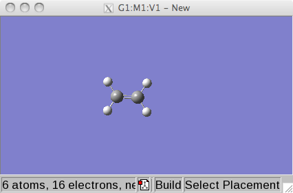
Select the main window and click on the the element buttom and select
a bare nitrogen atom.
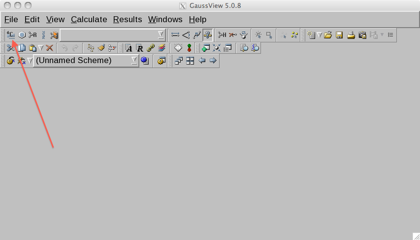
Now select the window in which the ethene is waiting and click on one
of the carbon atoms. This atom should become a nitrogen.
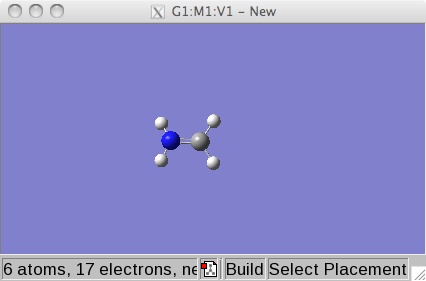
Now we have the starting structure for our purposes and we will start
by optimizing its geometry in the electronic ground state in the next
step.
Ground state geometry optimization
To model the electronic wave function we will use the complete active
space self-consistent field (CASSCF) approach, a multi-configurational
method (i.e. wave function is expanded in a limited number of
configuration state functions) that will be discussed in detail in one
of the lectures. For now it is sufficient to know that with this
methods we have access to both ground and excited state wave
functions. Fortunately, the molecule is so simple that we need not to
worry about selecting the orbitals for the CASSCF computations. We
take the HOMO and LUMO, the bonding and anti-bonding pi orbitals,
respectively. The electronic transition will promote an elecron from
the bonding into the anti-bonding pi orbitals.
We will use Pople's 6-31G basis set to expand the molecular orbitals
in. G stands for "Gaussian", so a GTO basis with 6 gaussian functions
for the inner (non-valence) electrons and 4 (3+1) for the valence
electrons is used.
From the menu in the main window in gaussview, select from the menu
the Calculate item.
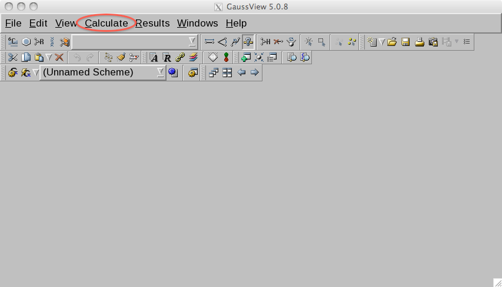
From the drop down list choose Gaussian Calculation Setup. This opens
an interface in which we can setup the calculations
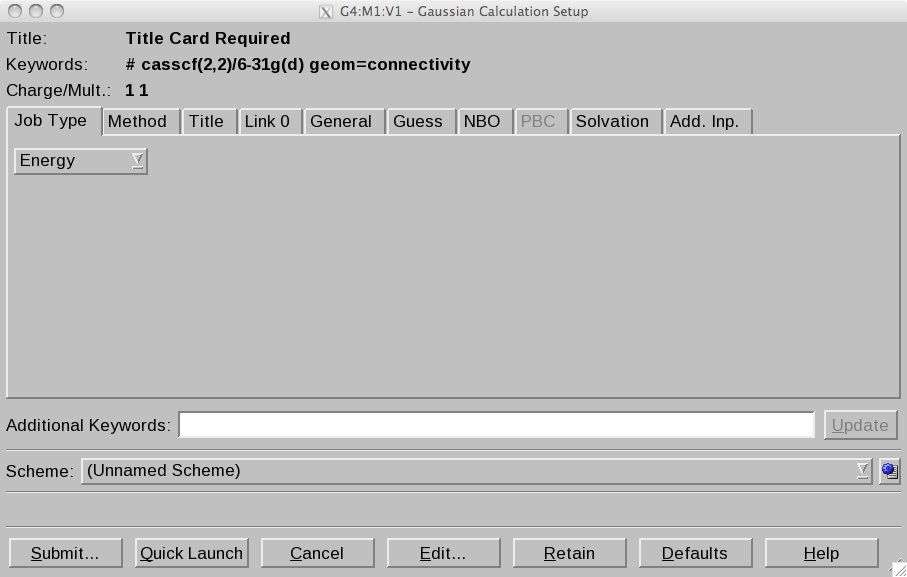
For the geometry optimization at the CASSCF level with 2 electrons in
2 orbitals, which are expanded in the 6-31G basisset, we need to
configure the tabs as follows:
Job Type
Next, click the Method tab.
- Method: Ground state, CASSCF.
- Basisset 6-31G
- Charge 1 (Note: because it is protonated, the molecule carries +1
e charge) Spin: Singlet
- Number of Electrons: 2
- Number of Orbitals: 2
Select the Link 0 tab. Here we can select how much memory, how many
processors we wish to use, and set the names of output files. We will
need a checkpoint file to visualize orbitals with gaussview (optional).
- Chkpoint File: click ... and invent a file name. I used im.chk.
Click Retain to store the setup parameters. Now select the main window
and choose the file tab and save the file. Again, invent your own
filename. I used im.com. The saved file should look something like:
%chk=/home/gegroenh/im_S0.chk
# opt casscf(2,2)/6-31g geom=connectivity
Title Card Required
1 1
C -1.86956513 1.60869563 0.00000000
H -2.46315013 2.53273363 0.00000000
H -2.46318113 0.68468163 -0.00002200
H 0.04993587 0.68465763 -0.00001900
H 0.04996687 2.53270963 0.00002600
N -0.54364913 1.60869563 0.00000000
1 2 1.0 3 1.0 6 2.0
2
3
4 6 1.0
5 6 1.0
6
Now we start the optimization by typing
This will take a while. During the calculation Gaussian writes an
output file (.log) that communicates the most important infos to the
user.
After the calculation is complete, you can open the output .log or
.chk in gaussian. Click on the file tab in the main gaussview window
and choose open file and select the im.log file.
Next, we want to understand what happens if this molecule absorbs a
photon.
Electronic transition to first excited state
To obtain the so-called vertical excitation energy we will do a single
point (energy only) computation of the excited state. In a vertical
excitation, the nuclei are not allowed to relax during the excitation,
which is usually a good approximation for an on-resonance optical
excitation. Exciting from the ground state geometry thus brings the
system instantly to a point on the excited state energy surface, known
as the Franck Condon point. Because the electron distribution is
different in the excited state, the Frank Condon point is not a
(local) minimum on the excited state potential energy surface.
Take the optimized ground state structure by opening the .log or.chk
file of the previous geometry optimization. From the menu in the main
window in Gaussview, select Calculate item again and choose Gaussian
Calculation Setup.
Job Type
- Energy (Note that now we are only interested in the energy
difference between the electronic ground and excited state at the
optimized ground state geometry)
Next, click the Method tab.
- Method: Ground state, Custom... (Note: method will appear in
Additional Keywords)
- Basisset 6-31G
- Charge 1 Spin: Singlet
- Number of Electrons: 2
- Number of Orbitals: 2
Because Gaussview does not allow to setup an excited state CASSCF
calculations, we do this by hand. We use the Additional Keywords
string. Add
- Additional Keywords: CASSCF(2,2,nroot=2)
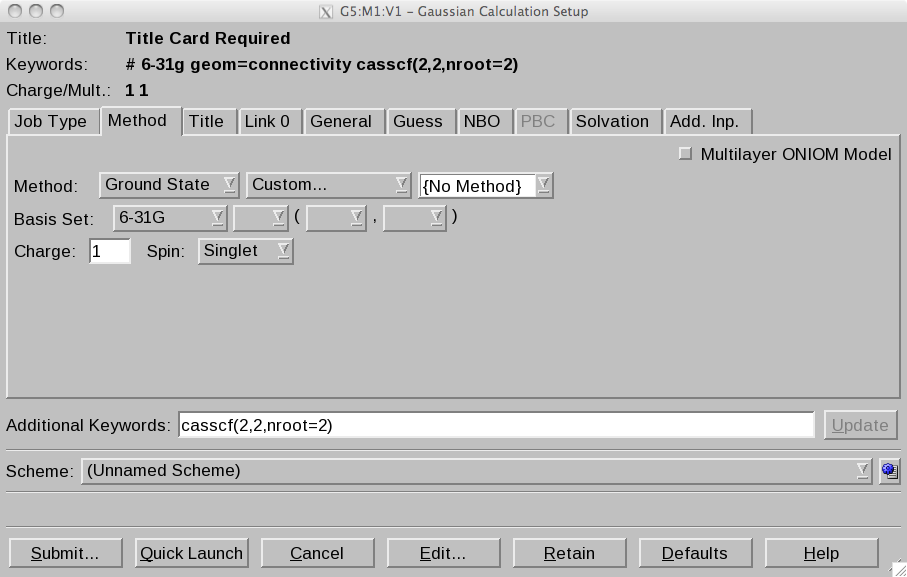
Select the Link 0 tab.
- Chkpoint File: click ... and invent a file name. I used im_S1.com.
This way we request again a CASSCF computations with 2 electrons in
two orbitals (HOMO and LUMO), but in contast to the first step,
require that the 2nd root of the Configuration Interaction problem is
computed, which is the first singlet excited state of this system.
Click Retain to store the setup parameters. Now select the main window
and choose the file tab and save the file. Again, invent your own
filename. I used im_S1.com. The saved file should look like:
%chk=/home/gegroenh/im_S1.chk # 6-31g geom=connectivity
casscf(2,2,nroot=2)
Title Card Required
1 1
C -0.67850745 0.00000000 0.00000214
H -1.21382920 -0.92768533 -0.00000877
H -1.21382929 0.92768533 0.00002371
H 1.13693295 0.85144265 0.00001049
H 1.13693288 -0.85144264 -0.00002024
N 0.60354820 0.00000000 -0.00000258
1 2 1.0 3 1.0 6 2.0
2
3
4 6 1.0
5 6 1.0
6
Now we perform the computation by typing
What is the excitation energy? What is the excitation wavelength?
Have a look at the orbitals as well. You need to open the .chk file
and click on the orbital button. This opens a new window. Here, you
first need to render the orbitals in the tab. Then you can select the
orbitals in the right window.
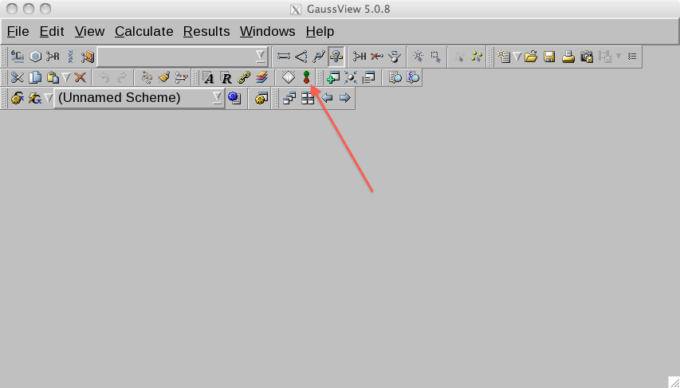
What kind of orbitals are these?
Conical intersection between excited and ground state potential energy surfaces
Next we locate the lowest energy conical intersection. As gaussview
does not allow one to set up such calculation automatically, we will
provide some non-default input parameters by hand. In addition we will
tweak the starting structure somewhat in order to speed up the
optimization. We will twist around the central N=C double bond to
bring the geometry closer to the MECI.
From the main gaussview window open the log or chk file of the
previous excited state energy calculation.
Then, select the main window and click the torsion-manipulation button.
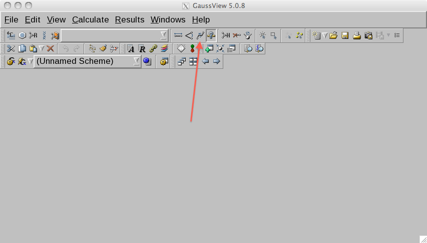
Click four atoms that define the torsion (or dihedral) angle around
the double bond.
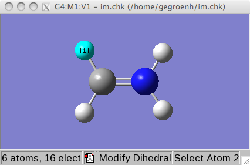
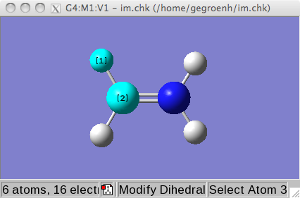
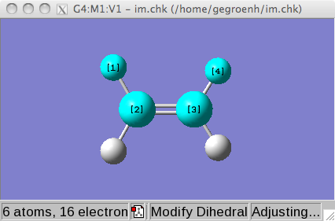
After selecting the fourth atom, a slider window opens.
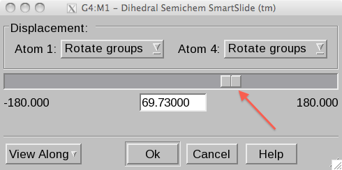
With the slider you can change to central torsion angle. Set it around
45 degrees.
We will now setup the calculations. Open the Gaussian Calculation
Setup window again.
Job Type
- Energy (Note that we will override this option by the Additional
Keywords string)
Method
- Method: Ground state, Custom...
- Basisset 6-31G
- Charge 1 Spin: Singlet
- Number of Electrons: 2
- Number of Orbitals: 2
Because gaussview does not allow to setup an excited state CASSCF
calculations, we do this by hand. We also need to state that we want
to optimize a conical intersection. We use again the Additional
Keywords string. Add
- Additional Keywords: CASSCF(2,2,nroot=2) opt=conical
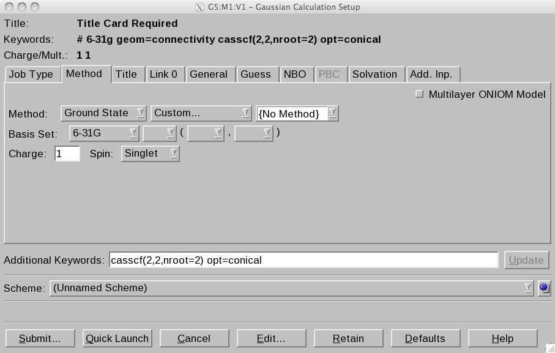
Select the Link 0 tab.
- Chkpoint File: click ... and invent a file name. I used im_CI.com.
Save the file. The content of this file should look like:
%chk=/home/gegroenh/im_CI.chk
# 6-31g geom=connectivity casscf(2,2,nroot=2) opt=conical
Title Card Required
1 1
C -0.67850745 0.00000000 0.00000214
H -1.21382862 -0.91434259 0.15677690
H -1.21382987 0.91434372 -0.15676205
H 1.13693348 0.83919195 0.14391019
H 1.13693235 -0.83919183 -0.14391993
N 0.60354820 0.00000000 -0.00000258
1 2 1.0 3 1.0 6 2.0
2
3
4 6 1.0
5 6 1.0
6
Perform the optimization by typing
This may take a while. If there are convergence problems in the CASSCF
cycles, you may try to add another keyword to the keyword list:
iop(5/7=512). This keyword increases the maximum number of SCF cycles
in the CASSCF calculation from the default value of 64 to 512. Usually
problems in CASSCF convergence hint at problems with the orbitals
and/or geometry, so use it with care. Before increases the maximum,
make sure to inspect the geometry and orbitals.
What is the energy of the twisted structure? How much is it compared
to the FC point? How large is the energy gap between the excited and
ground state at the conical intersection?
Open the log file with a viewer, such as less or emacs. Scroll to the
last MSCSF cycle. Gaussian prints information about the branching
space vectors, the gradient difference vector and derivative coupling
vectors. Only displacements along these (cartesian) vectors can lift
the degeneracy. When projected onto the 2D subspace spanned by these
vectors, the adiabatic surfaces look like a double cone touching at
the conical intersection. The vectors can be visualized as shown here.
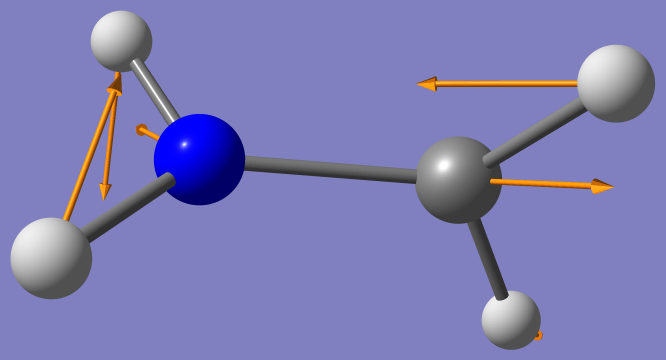
Gradient difference vector
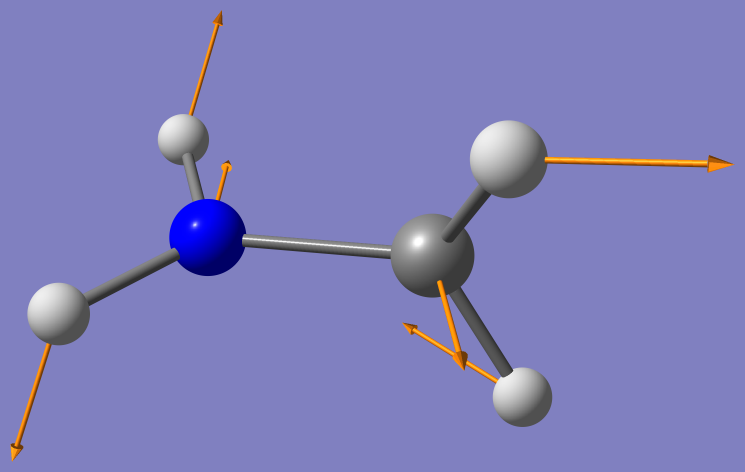
Derivative Coupling vector
Since the enery of the conical intersection is lower, the system can
access the conical intersection and decay to the ground state. Since
the twisted structure has a higher energy structure on ground state
than the minimum energy geometry (by how much? Hint: at the CI the
ground and excited state are degenerate), a photon absorption can thus
help to bring about an isomerization.
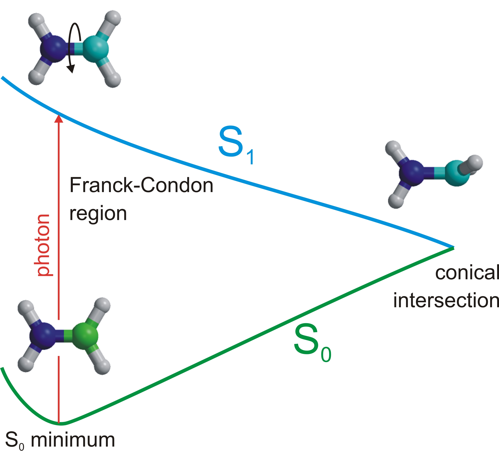
In this exercise there is no chemical difference between the cis and
trans isomers. To keep track of the isomerization you can substitute
one of the protons on the nitrogen and one of the protons on the
carbon by methyl groups and repeat the exercise (optional).